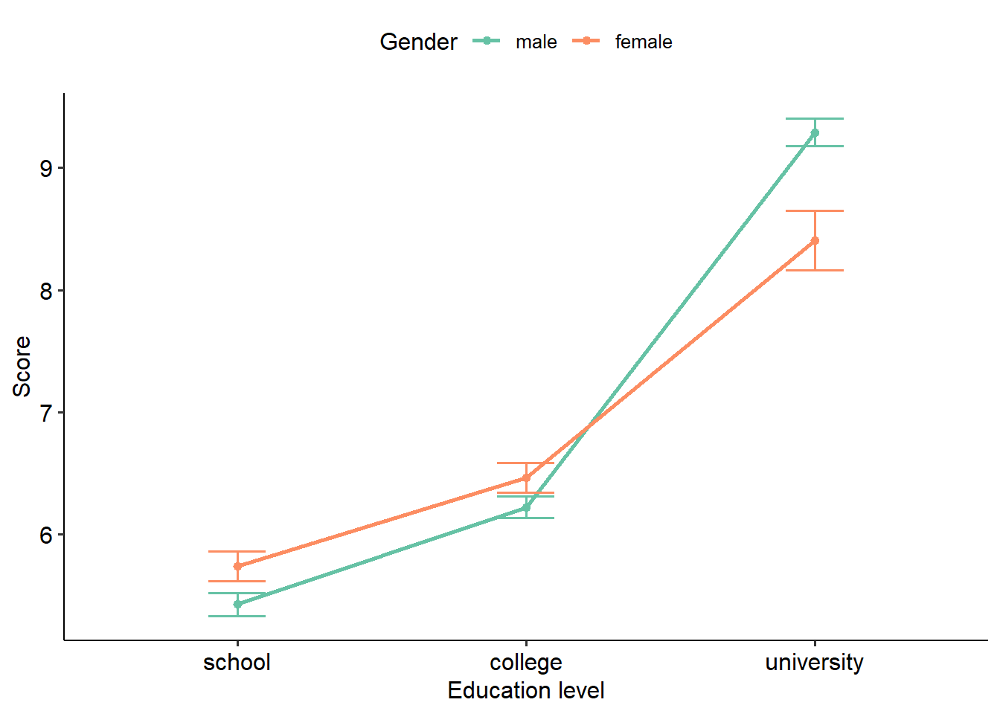
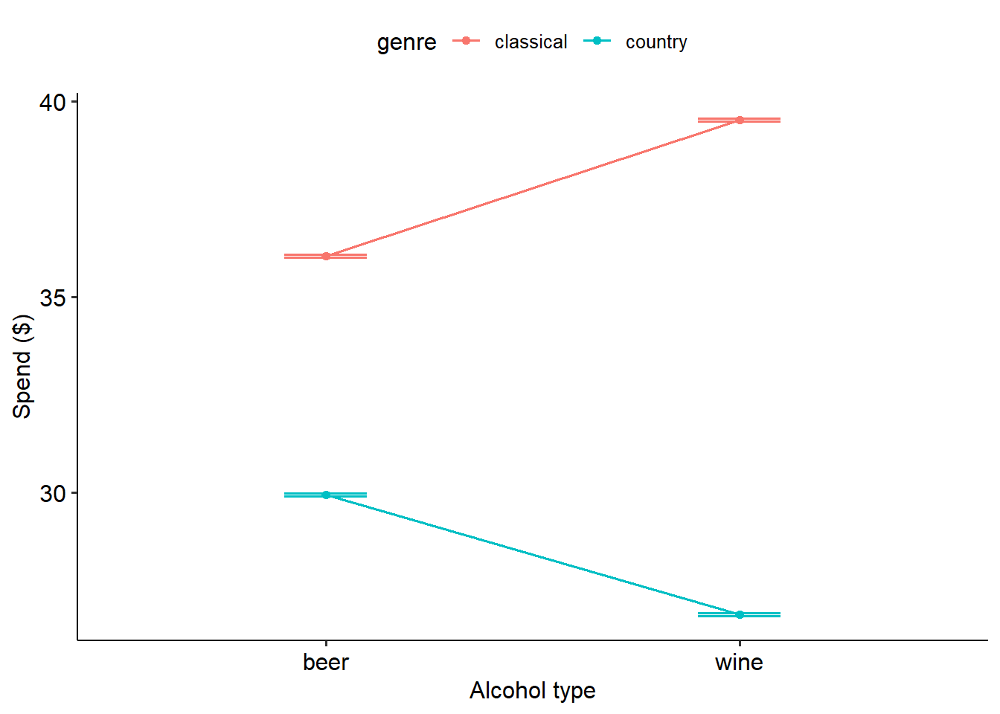
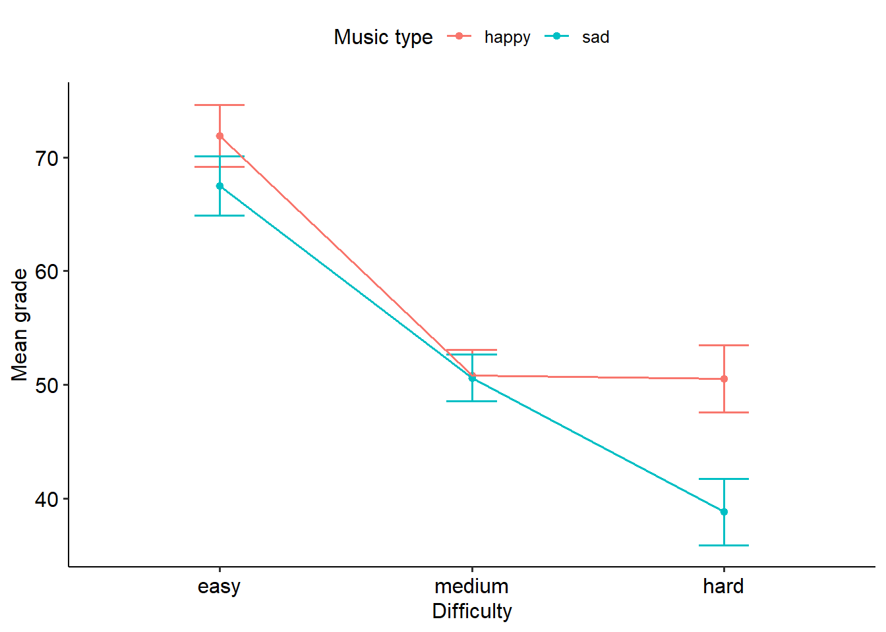
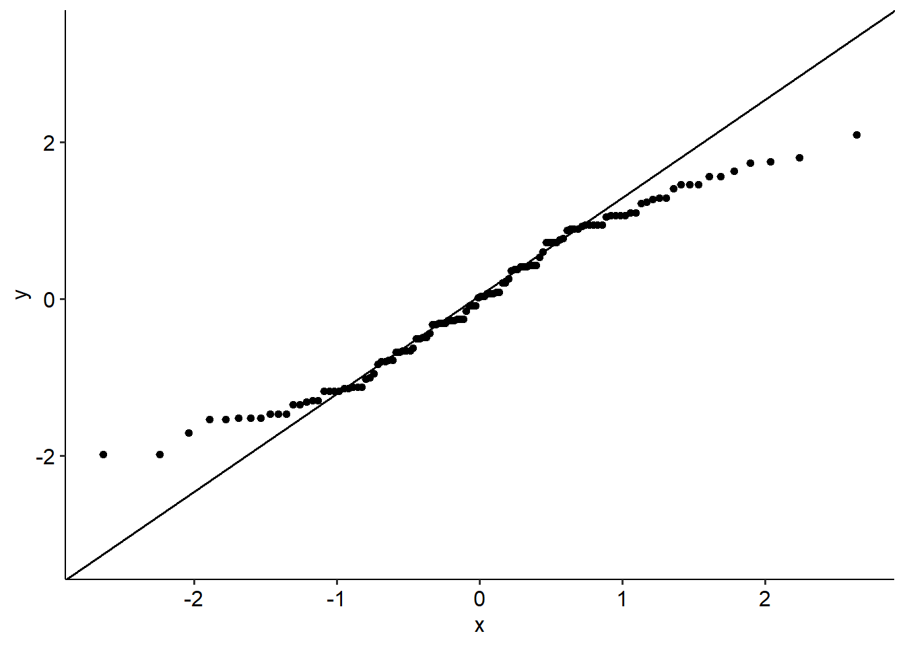
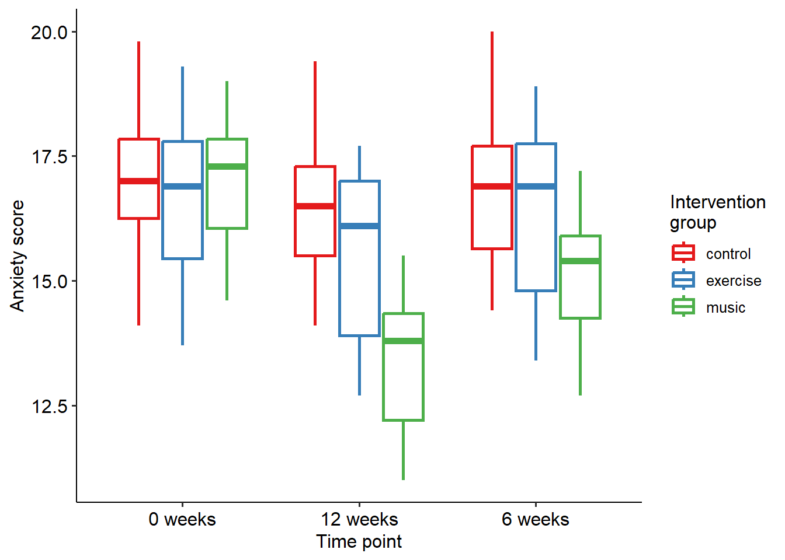
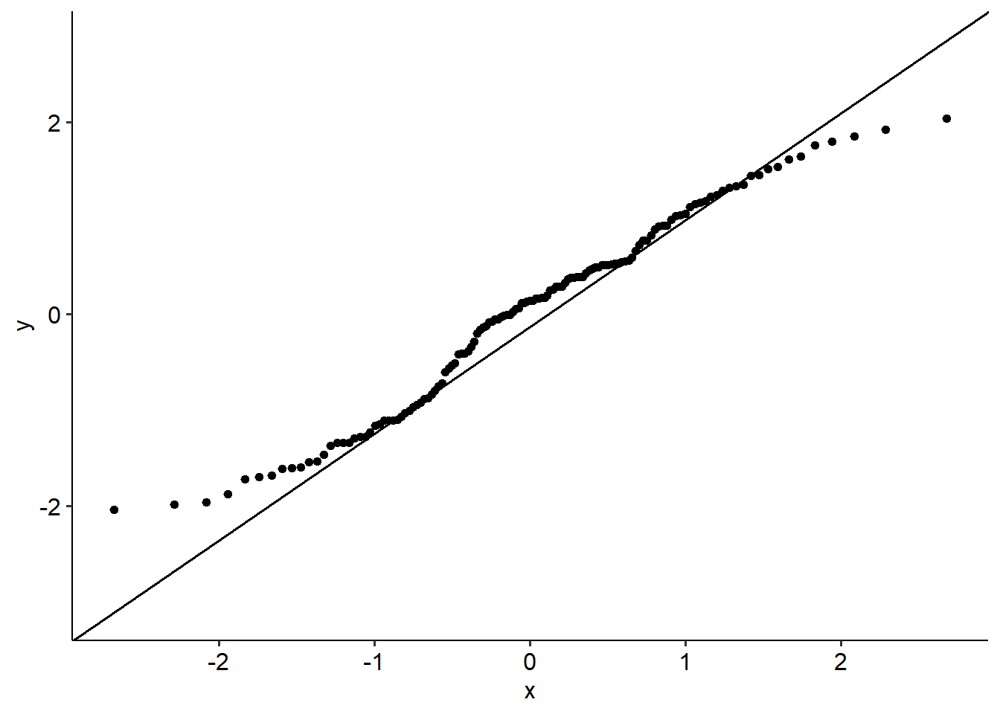
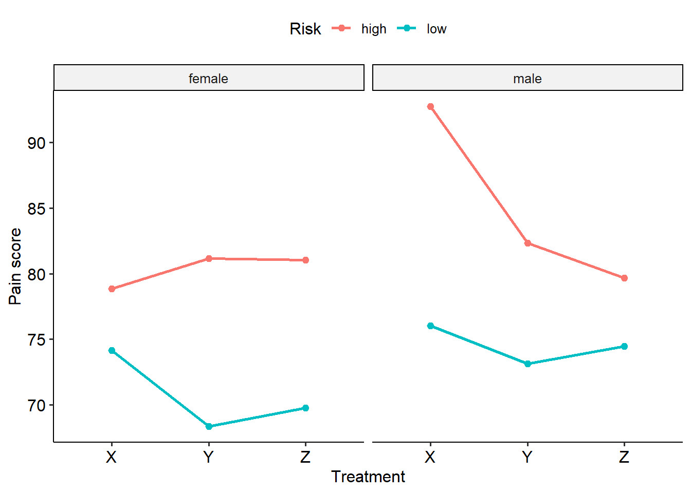
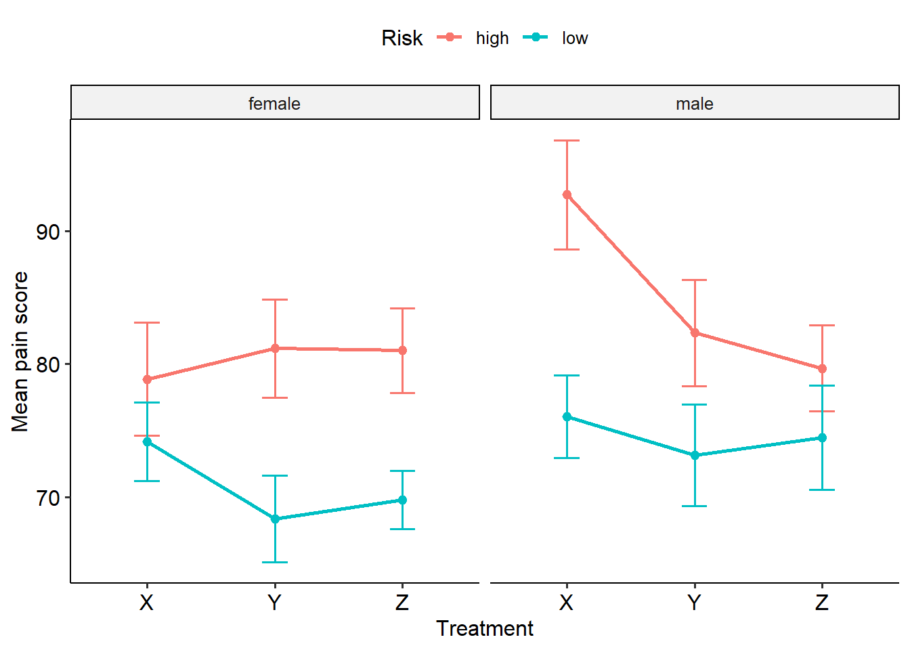

8 Factorial ANOVAs
In this module we return to the humble ANOVA, and to working with categorical predictors again. Specifically, we move beyond just having one categorical predictor in an ANOVA model to having two (and all of the complexities that come with doing so). We’ll also take a look at interactions, which form a crucial part of more complex models specifying relationships between our predictors.
This module covers:
- Two-way between-subjects ANOVA
- Two-way repeated measures ANOVA
- TWo-way mixed ANOVA
- Three-way between-subjects ANOVA
8.1 Introduction
In Week 9 we talked about analyses of variance - tests for comparing means across one categorical IV/predictor (typically with at least 3 levels) on one continuous outcome. In this extension module we move to some more complex ANOVA models - specifically two-way ANOVAs, where we have two categorical predictors and one continuous outcome. The main goal is still largely the same - comparing means across groups - but becomes a bit more complex with the involvement of two variables. We’ll also briefly consider the instance of a three-way ANOVA (i.e. three predictors), but won’t spend too much time on this for good reason. We’ll also talk briefly about some statistical concepts that we haven’t covered in the main subject content, specifically about interactions and contrasts.
By the end of this module you should be able to:
- Describe what an interaction is
- Conduct and interpret an omnibus two-way ANOVA
- Distinguish between post-hoc tests, simple effects tests and planned contrasts
- Attempt to think about a three-way ANOVA (but see warnings on the relevant page)
8.2 Factorial designs
In Week 9, when we talk about ANOVAs we conduct one-way ANOVAs. These tests from Week 9 are called one-way ANOVAs because there is only one IV with multiple levels being tested. However, in many research designs we will want to test the effect of two or more categorical variables at the same time (for example, experimental conditions or variables that capture important categories, such as participant sex).
When we want to test the effect of more than one IV, we start getting into what we call factorial ANOVAs. Factorial ANOVAs are used when we have two or more IVs, each with at least two levels per variable. This is common in a lot of research designs, where either multiple categorical variables are collected as part of the data collection phase or categorical variables are created as part of the analysis process.
We will talk about this more on the next page, but factorial designs are particularly useful for testing interactions, and the effects of both of your IVs together.
When reporting results for factorial designs, it is expected that you report how many levels each variable had. For instance, let’s say your two IVs are participant sex (male and female) and experimental group (group A, B and C). If you were to test this factorial design, there are a couple of ways you could report this:
- A Sex (2) x Group (3) factorial ANOVA
- A 2 x 3 factorial ANOVA
- A Sex x Group (2 x 3) factorial ANOVA
The first one is the preferable because it lays out the conditions clearly.
8.2.1 What is an interaction?
Pretend you’ve been enacting a singing intervention in a school of kids, where one group of kids have been singing daily and another group have not been. You’re interested in whether the singing intervention has an effect on their wellbeing. By and large, the singing intervention does - there is a clear difference between the kids who get singing sessions and kids who don’t. However, you notice that how effective the intervention is depends on whether they are boys or girls. The girls appear to benefit the most, while the boys don’t seem to as much. In other words, the effectiveness of the intervention is contingent on the biological sex of the child.
This is an example of an interaction, where the effect of one IV depends on the effect of another IV. The consequence of an interaction is that the two IVs both influence the DV together (in a non-additive manner). Interactions can be important for understanding how certain phenomena work.
Consider the two plots below, that show the relationship between two predictors (X and Group) and one outcome (on the y-axis).
- In the graph on the left, there is a clear difference between groups 1 and 2. There is also a clear difference between A, B and C on X; however, this is constant.
- In the graph on the right, there’s still a clear difference between groups 1 and 2. However, the difference is greater between different groups. For group 1, there is no change from A to C, but there is for group 2; in other words, the effect of X depends on the effect of Group.
The easiest way of demonstrating an interaction is by using an interaction plot, like the one above. This kind of graph plots means as dots, and joins different groups/IVs together by lines. Interaction plots with error bars (e.g. +/- 1 standard error) provide the clearest way of graphing of an interaction effect.
8.2.2 Testing for interactions
We can test for interactions when we have at least two independent variables/predictors, using both ANOVAs and regressions. The majority of this module will focus on instances with two predictors in an ANOVA context, as they are easiest to conceptualise.
By default, if we have two predictors - A, and B, and an outcome, Y - our model will have the following terms:
- A, or the main effect of A (i.e. of A only)
- B, the other main effect
- A x B, which is our interaction effect
Therefore, we end up with two types of effects that we need to interpret: main effects, and interaction effects. An interaction effect is what we call a higher-order term, in that it is a more complex term in our model. We test the significance of each term, giving us three p-values and sets of test statistics.
8.3 Simple effects tests
Remember from the previous page that when we have two predictors, we end up with three model terms:
- A, a main effect
- B, a main effect
- A x B, which is our interaction effect
Therefore, we end up with two types of effects that we need to interpret: main effects, and interaction effects. An interaction effect is what we call a higher-order term, in that it is a more complex term in our model. We test the significance of each term, giving us three p-values and sets of test statistics.
Here’s an example of a two-way ANOVA with a significant interaction. Notice that there are three effects here: one for gender, one for education and the gender x education level interaction. (We’ll go through how to run these models a bit later.)
Anova Table (Type 3 tests)
Response: score
Effect df MSE F pes p.value
1 gender 1, 52 0.30 0.59 .011 .448
2 education_level 2, 52 0.30 189.17 *** .879 <.001
3 gender:education_level 2, 52 0.30 7.34 ** .220 .002
---
Signif. codes: 0 '***' 0.001 '**' 0.01 '*' 0.05 '+' 0.1 ' ' 1How do we interpret this? Clearly, we have no main effect of gender (p = .448) but we do have an effect of education level (p < .001). We also have a significant interaction term: gender x education (p = .002).
Here is where something called the principle of marginality kicks in. The principle of marginality, states that if two variables interact with each other, the main effects of each variable are marginal to their interaction. In more simple terms, this means that a significant interaction is a better explanation of the main effects than the main effects themselves. In context, this means that the significant effect of education level is actually best explained by decomposing the gender x education level interaction. Therefore, if you have a significant interaction you want to break this down first. If the interaction is not significant, you can run post-hocs on the main effects only.
But like a regular ANOVA, this only tells us that there is an interaction. How do we find out which means are different?
8.3.1 Simple effects tests
One option is to conduct post-hoc tests like normal, and run post-hocs on the interaction term. But this is not necessarily meaningful:
Tukey multiple comparisons of means
95% family-wise confidence level
Fit: aov(formula = tmp_formula, data = dat.ret, contrasts = contrasts)
$gender
diff lwr upr p adj
male-female 0.1932143 -0.09680436 0.4832329 0.1870895
$education_level
diff lwr upr p adj
school-college -0.7573684 -1.187898 -0.3268386 0.0002637
university-college 2.4944417 2.069328 2.9195559 0.0000000
university-school 3.2518102 2.826696 3.6769243 0.0000000
$`gender:education_level`
diff lwr upr p adj
male:college-female:college -0.2396667 -0.9873581 0.508024749 0.9317495
female:school-female:college -0.7220000 -1.4497494 0.005749384 0.0529764
male:school-female:college -1.0363333 -1.7840247 -0.288641918 0.0019203
female:university-female:college 1.9430000 1.2152506 2.670749384 0.0000000
male:university-female:college 2.8290000 2.1012506 3.556749384 0.0000000
female:school-male:college -0.4823333 -1.2300247 0.265358082 0.4086560
male:school-male:college -0.7966667 -1.5637819 -0.029551460 0.0374890
female:university-male:college 2.1826667 1.4349753 2.930358082 0.0000000
male:university-male:college 3.0686667 2.3209753 3.816358082 0.0000000
male:school-female:school -0.3143333 -1.0620247 0.433358082 0.8132166
female:university-female:school 2.6650000 1.9372506 3.392749384 0.0000000
male:university-female:school 3.5510000 2.8232506 4.278749384 0.0000000
female:university-male:school 2.9793333 2.2316419 3.727024749 0.0000000
male:university-male:school 3.8653333 3.1176419 4.613024749 0.0000000
male:university-female:university 0.8860000 0.1582506 1.613749384 0.0087499A more targeted approach is to conduct simple effects tests. Simple effects tests are a form of pairwise comparisons that are run to break down an interaction. It involves running pairwise comparisons between one predictor at every level of the other predictor.
Using the example above, this might include running pairwise comparisons between education levels for males and females separately:
gender = female:
contrast estimate SE df t.ratio p.value
college - school 0.722 0.246 52 2.935 0.0050
college - university -1.943 0.246 52 -7.899 <0.0001
school - university -2.665 0.246 52 -10.834 <0.0001
gender = male:
contrast estimate SE df t.ratio p.value
college - school 0.797 0.259 52 3.073 0.0034
college - university -3.069 0.253 52 -12.143 <0.0001
school - university -3.865 0.253 52 -15.295 <0.0001Or, to spin it the other way, you might compare males and females for each education level separately:
education_level = college:
contrast estimate SE df t.ratio p.value
female - male 0.240 0.253 52 0.948 0.3473
education_level = school:
contrast estimate SE df t.ratio p.value
female - male 0.314 0.253 52 1.244 0.2191
education_level = university:
contrast estimate SE df t.ratio p.value
female - male -0.886 0.246 52 -3.602 0.0007Generally, it is wise to run simple effects tests both ways - as this decomposes the interaction into something that is interpretable. This is usually guided by theoretical reasons (i.e. a hypothesis about which simple effects to run). Of course, a good graph will tell the rest of the story:

8.4 R-specific considerations
This page discusses some basic considerations about performing factorial ANOVAs in R.
8.4.1 The afex package
In the sections on one-way ANOVAs we largely stuck to using base R’s aov() function, or the anova_test() function from the rstatix package. While we can absolutely continue to use these for factorial ANOVAs, one problem is that factorial ANOVAs are inherently more complex models than their one-way progenitors. For instance, aov() only really works with balanced designs, which is where every cell (i.e. group x group combination of your IVs/predictors) has the same number of participants.
To use an example, a 2 x 2 ANOVA where each of the four possibilities (e.g. Level 1 Variable A + Level 1 Variable B…) has 20 participants is a balanced design. In contrast, if A1-B2 had 40 participants and the other possibilities had 20 participants, this would be an unbalanced design. Unbalanced designs introduce several complexities for ANOVAs.
The afex package is designed for factorial ANOVAs in particular. It provides a very nice and convenient way of running factorial ANOVAs in a way that’s not too hard, while still being flexible enough for more hardcore R users.
In particular, the function you will want to keep in mind is aov_ez().
8.4.2 Writing interactions in R
The aov_ez() function that was just mentioned doesn’t use the same kind of formula notation that we saw in the other test sections, and that’s to make it easier to run. However, these analyses absolutely can be recreated in formula notation, and you will see many instances of this.
Recall the basic layout for a formula in R:
lm(outcome ~ predictor, data = dataset)
aov(outcome ~ predictor, data = dataset)To extend this to two variables with no interaction, you can simply add the second predictor as such:
aov(outcome ~ predictor_1 + predictor_2, data = dataset)To code for an interaction term, however, there either needs to be an explicit term for the interaction (denoted using a colon between the two interaction variables):
aov(outcome ~ predictor_1 + predictor_2 + predictor_1:predictor_2, data = dataset)OR as the shorthand for above, which uses the asterisk. Note that the asterisk will include both the interaction term and all of its main effects (a la principle of marginality):
aov(outcome ~ predictor_1 * predictor_2, data = dataset)For what we do in this section, this is ok - but you may find in certain circumstances that you don’t want all of these terms together, so the first approach will let you specify what terms to include in the model.
8.4.3 Simple effects tests in R
Simple effects tests, weirdly, are difficult to do in Jamovi - the gamlj module in Jamovi will do simple effects tests for linear models (which includes ANOVAs), but it’s difficult to do so for anything other than a two-way between-groups ANOVA without some prerequisite knowledge on linear mixed models.
In R, simple effects are relatively easy to estimate through the use of the emmeans package. All we need to do is just extend our emmeans calls that we have been using for one-way ANOVAs to incorporate a second variable.
Imagine an ANOVA model named model_aov and two predictors named A and `B. Recall the basic syntax for generating comparisons for a one-way ANOVA:
emmeans(model_aov, ~ A)To run this as a simple effects test, we simply need to tell emmeans to conduct these comparisons by another variable. This can be easily done by specifying the by argument in emmeans:
emmeans(model_aov, ~ A, by = "B")This will estimate the EM means for every level of A, at each level of B. To run simple effects tests for variable two, the variable names simply need to be swapped.
Just like before, we can pipe from from emmeans() to pairs():
emmeans(model_aov, ~ A, by = "B") %>%
pairs(infer = TRUE)Final note on this matter: Rstatix does provide a function called emmeans_test() to perform a similar test. However, using the original emmeans package and its functions give you much greater flexibility, so it helps to learn how to use this as is.
8.5 Two-way between groups ANOVA
8.5.1 Introduction
Two-way between-groups ANOVAs are used when you have two categorical IVs, both of which are between-groups variables. For example, you might have the following IVs:
- Sex: Male or female
- Experimental group: Group A or Group B
There are four possibilities here - males in Group A, females in Group A, males in Group B and females in Group B. These are mutually exclusive categories in the context of this design.
8.5.2 Example
One of the earliest modern studies on music’s effect on consumer behaviour came from Hargreaves et al. 1999, who played either French or German music in a wine shop. They looked at how much people spent on French and German wines, and tested to see whether the effect of background music and wine type had an effect on spending.
We’re going to step through an analogous (fictional) example, inspired by the Hargreaves et al. (1999) study. Pretend we played either country or classical music in a supermarket, and observed moments when people purchased beer or wine (We’re going to assume we’ve removed people who bought both beer and wine together.) . In this hypothetical scenario, we might expect a similar ‘priming’ effect of the background music - that is, maybe the type of music will prime people to behave in different ways. Maybe, for instance, a certain kind of music will make people spend more, but this might depend on what type of alcohol they are buying.
Our research question in this instance is, Does the effect of music on alcohol spend depend on the type of alcohol purchased?
Therefore, we have two between-groups IVs:
- Alcohol type being purchased: was the person buying beer or wine?
- Genre of background music: was country or classical music being played at the time?
We’re interested in whether these two variables have an effect on how much people spend (our dependent variable/outcome). This can be described as a two-way ANOVA (alcohol type x genre), or alternatively as a 2 x 2 ANOVA - more specifically, 2 (beer, wine) x 2 (country, classical) ANOVA between alcohol type and genre.
Let’s start by generating descriptives and a graph to visualise what we’re looking at:
twoway_alcohol <- read_csv(here("data", "factorial", "twoway_bganova.csv"))
twoway_alcohol %>%
group_by(alcohol_type, genre) %>%
summarise(
n = n(),
mean = mean(spend, na.rm = TRUE),
median = median(spend, na.rm = TRUE),
sd = sd(spend, na.rm = TRUE),
se = sd/n
) `summarise()` has regrouped the output.
ℹ Summaries were computed grouped by alcohol_type and genre.
ℹ Output is grouped by alcohol_type.
ℹ Use `summarise(.groups = "drop_last")` to silence this message.
ℹ Use `summarise(.by = c(alcohol_type, genre))` for per-operation grouping
(`?dplyr::dplyr_by`) instead.# A tibble: 4 × 7
# Groups: alcohol_type [2]
alcohol_type genre n mean median sd se
<chr> <chr> <int> <dbl> <dbl> <dbl> <dbl>
1 beer classical 49 36.1 35.9 0.981 0.0200
2 beer country 51 29.9 29.8 1.03 0.0202
3 wine classical 47 39.5 39.4 0.993 0.0211
4 wine country 53 26.9 27.0 1.03 0.01958.5.3 Assumption testing
As we have previously seen with ANOVAs in R, to test some of our assumptions we first need to build our ANOVA. Note that here, we use the aov_ez() function from the afex package. Because in many instances we work with unbalanced data (i.e. each group x group combination does not have the same number of participants), we tend to calculate something called Type III Sums of Squares/ANOVAs. We won’t dive too much into this, but this is essentially about how sums of squares are calculated, and how the effects are tested. Learning Statistics with R has an excellent explanation of what the various types are.
twoway_alcohol_aov <- aov_ez(
data = twoway_alcohol,
id = "ptcpt",
dv = "spend",
between = c("alcohol_type", "genre"),
anova_table = list(es = "pes"),
include_aov = TRUE
)Converting to factor: alcohol_type, genreContrasts set to contr.sum for the following variables: alcohol_type, genreThe assumptions for a two-way ANOVA are the same as a one-way between groups ANOVA:
- The data should be independent of each other.
- Equality of variance: Just like the one-way ANOVA, we use Levene’s test to examine our equality of variance assumption.
twoway_alcohol %>%
levene_test(spend ~ alcohol_type * genre, center = "mean")# A tibble: 1 × 4
df1 df2 statistic p
<int> <int> <dbl> <dbl>
1 3 196 0.0528 0.984- Normality of residuals: Look at the Shapiro-Wilk test (on the residuals) or a Q-Q plot. If you use
aov_ez()to calculate your ANOVA, note that the residuals are within eitheraovorlmwithin your ANOVA, so you will find them inmodel$aov$residuals:
# twoway_alcohol_aov <- aov(spend ~ alcohol_type * genre, data = twoway_alcohol)
shapiro.test(twoway_alcohol_aov$aov$residuals)
Shapiro-Wilk normality test
data: twoway_alcohol_aov$aov$residuals
W = 0.99647, p-value = 0.9295Both assumptions appear to be intact.
8.5.4 Output
Let’s first look at our output for the omnibus ANOVA. The way to read this table is much like the same for a one-way ANOVA, but now we need to read across each line - as each line represents a different effect. So we see that:
- There is no main effect for alcohol (p = .137),
- There is a main effect for genre (p < .001),
- Importantly, there is a significant interaction effect for alcohol x genre (p < .001).
twoway_alcohol_aovAnova Table (Type 3 tests)
Response: spend
Effect df MSE F pes p.value
1 alcohol_type 1, 196 1.02 2.23 .011 .137
2 genre 1, 196 1.02 4295.08 *** .956 <.001
3 alcohol_type:genre 1, 196 1.02 519.96 *** .726 <.001
---
Signif. codes: 0 '***' 0.001 '**' 0.01 '*' 0.05 '+' 0.1 ' ' 1In other words, there is a significant effect of background music genre on how much people spent on alcohol, but this depended on the type of alcohol they bought. Because this interaction is significant, we now need to turn to conducting simple effects tests to decompose what is actually going on.
Remember, for a simple effects test we want to test for differences between the levels of one variable, at every level of the other variable. One option is to hold alcohol as a constant, and compare genre for each type of alcohol purchased. Another is to instead hold genre constant and compare the two types of alcohol.
Although it’s up to us to determine which set of comparisons we interpret, it’s useful to return to our original research question to guide our thinking here. Remember that we were originally interested in the effect of music on alcohol spend, but we thought this might depend on the type of wine being purchased. In that case, we might wish to hold alcohol type constant, and compare the two genres against each other.
That means that we need to conduct the following comparisons:
- For beer, country vs classical
- For wine, country vs classical
In R, we can simply use emmeans to generate these comparisons.
emmeans(twoway_alcohol_aov, ~ genre, by = "alcohol_type") %>%
pairs(infer = TRUE) alcohol_type = beer:
contrast estimate SE df lower.CL upper.CL t.ratio p.value
classical - country 6.11 0.202 196 5.72 6.51 30.242 <0.0001
alcohol_type = wine:
contrast estimate SE df lower.CL upper.CL t.ratio p.value
classical - country 12.64 0.202 196 12.24 13.04 62.416 <0.0001
Confidence level used: 0.95 We can see that:
- For beer, people spent more money if classical was on in the background compared to country (Mean difference = 6.11, t = 30.24, p < .001).
- But for wine, this difference was even greater - participants spent much more on wine if classical music was playing in the background (MD = 12.64, t = 62.42, p < .001).
Of course, it might make more sense to do the simple effects tests the other way round; in other words, hold genre constant and compare how much was spent on each alcohol type. You can still absolutely find out this information by changing the by argument within emmeans():
- For country, wine vs beer (wine country - beer country): t = 15.34, p < .001
- For classical, wine vs beer (wine classical - beer classical): t = 16.85, p < .001.
emmeans(twoway_alcohol_aov, ~ alcohol_type, by = "genre") %>%
pairs(infer = TRUE) genre = classical:
contrast estimate SE df lower.CL upper.CL t.ratio p.value
beer - wine -3.48 0.206 196 -3.88 -3.07 -16.847 <0.0001
genre = country:
contrast estimate SE df lower.CL upper.CL t.ratio p.value
beer - wine 3.05 0.198 196 2.66 3.44 15.378 <0.0001
Confidence level used: 0.95 8.5.5 Write-up
A two-way ANOVA was conducted to test whether alcohol type and music genre had an effect on spending habits. We found a significant main effect of music genre (F(1, 196) = 4295.08, p < .001) but no significant main effect of alcohol type (p = .137). We found a significant two-way interaction between alcohol type and genre (F(1, 196) = 519.97, p < .001). To follow up this two-way interaction, we conducted simple effects tests. The simple effect of genre was analysed for each level of alcohol type with Holm corrections. On average, people spent $6.11 more on beer if they heard classical music compared to country music (t(196) = 30.242, p < .001). Likewise, on average people spent $12.64 more on wine if they heard classical music compared to country (t(196) = 62.416, p < .001).
8.6 Two-way repeated measures ANOVA
8.6.1 Introduction
Similar to its one-way counterpart, in a two-way ANOVA we assess the effect of two within-subjects variables on a dependent variable.
The following example is completely fictional, and has no real grounding in theory (as far as I’m aware). It’s intentionally facetious, but hopefully demonstrates the process of doing a two-way repeated measures ANOVA.
8.6.2 Example
If you did this subject in 2023 you would have met Victor and Gloria in the second statistics assignment, who were working with data looking at what predicts high school GPA. They’ve now moved onto a new project about whether listening to happy or sad music may affect exam performance. To do this, they design a nifty little study. Their research question is: does music affect exam performance under varying conditions of difficulty?
They recruit 20 participants and bring them into the lab. This is their procedure:
- Participants come into the lab and do a series of standard maths exams. The maths exams are either easy, medium or hard, and participants are randomly assigned to do either the easy or the hard one first. They are also randomly assigned either happy or sad background music as they do the exam.
- Once they have completed the first exam, they take a 10 minute break and then do another exam that is easy, medium, or hard, and with either happy or soft music in the background.
- This process repeats until they have done all combinations of difficulty and background music.
- Each exam is scored out of 100.
We have two within-subjects independent variables here:
- Difficulty of the exam (3 levels: easy, medium, hard)
- Background music (2 levels: happy or sad)
Every participant therefore does 6 maths exams: easy-happy, easy-sad, medium-happy, medium-sad, hard-happy and hard-sad. The dependent variable of interest is their exam score. We’re interested in whether the difficulty and the music type have an effect on exam performance. Because our two IVs are within-subject variables, we will want to use a two-way repeated measures ANOVA, or a difficulty (3) x music (2) repeated measures ANOVA.
twoway_exam <- read_csv(here("data", "factorial", "twoway_rmanova_long.csv"))Rows: 120 Columns: 4
── Column specification ────────────────────────────────────────────────────────
Delimiter: ","
chr (2): difficulty, music
dbl (2): ptcpt, grade
ℹ Use `spec()` to retrieve the full column specification for this data.
ℹ Specify the column types or set `show_col_types = FALSE` to quiet this message.R will generally treat character variables as factors, but will order the factors alphabetically. In our instance, because we have a specific order for the categories that is not alphabetical and we want our graph to reflect this, we will need to tell R what order our levels are. This is simple to do with the factor() function, which will create factors from columns in your data. factor() first needs to know what column you are wanting to create factors in, and then it will want to know the specific order of the factors. The order is set with the levels argument.
We will recode both the difficulty and the music type variables for completion’s sake, and there are two ways to go about doing this.
First, you can just use base R functions like so:
twoway_exam$music <- factor(twoway_exam$music, levels = c("happy", "sad"))Or you can use factor() within mutate and largely identical syntax:
twoway_exam <- twoway_exam %>%
mutate(
difficulty = factor(difficulty, levels = c("easy", "medium", "hard"))
)Let’s start with the usual descriptives and graphs:

twoway_exam %>%
group_by(difficulty, music) %>%
summarise(
n = n(),
mean = mean(grade),
sd = sd(grade),
se = sd/sqrt(n)
)# A tibble: 6 × 6
# Groups: difficulty [3]
difficulty music n mean sd se
<fct> <fct> <int> <dbl> <dbl> <dbl>
1 easy happy 20 71.9 6.25 1.40
2 easy sad 20 67.5 5.97 1.33
3 medium happy 20 50.8 5.18 1.16
4 medium sad 20 50.6 4.65 1.04
5 hard happy 20 50.5 6.74 1.51
6 hard sad 20 38.8 6.67 1.49Eyeballing the graph, we can see that there might be some sort of effect happening. Unsurprisingly, it looks like the easy maths exams are, well. easier, because people are scoring better on them. There might be an effect of music, because in both easy and hard conditions it looks like people do better with happy music compared to sad music. But the interaction plot tells us there’s something clearly going on, and it paints a really interesting story on its own. It appears that there’s almost a ‘plateau’-ing effect with medium difficulty, in that both happy and sad hit the same point in exam scores. However, it looks like for happy music, harder exams see no further decrease in performance - but there is a sharp drop again for sad music.
8.6.3 Assumptions
The assumptions for a two-way RM ANOVA is the same as a one-way RM-ANOVA:
The data from the conditions should be normally distributed. (More specifically, the residuals should be normally distributed.)
The data for each subject should be independent of every other subject.
Sphericity must be met.
As is the case with one-way repeated measures ANOVAs, the assumption of sphericity is only tested when there are three or more levels; with only two levels, the assumption is always met. The output is below with the main ANOVA output. The sphericity for all of our effects is intact, so we don’t have any issues here, but if we did the same principle would apply - we would apply our corrections depending on the value of epsilon.
Let’s also see if our variables are normally distributed.
R-Note: For a repeated measures ANOVA, for some reason the closest you can get to generating what Jamovi does is to build an aov() model without an explicit Error() term - as would be the case for a fully between-subjects ANOVA. You can then use the standardised residuals to create a Q-Q plot using the below code. Note that broom:augment() is just a helper function that nicely extracts the residuals:
aov(grade ~ difficulty * music, data = twoway_exam) %>%
broom::augment() %>%
ggplot(aes(sample = .std.resid)) +
geom_qq() +
geom_qq_line()Warning: The `augment()` method for objects of class `aov` is not maintained by the broom team, and is only supported through the `lm` tidier method. Please be cautious in interpreting and reporting broom output.
This warning is displayed once per session.
It’s not… great but for the purposes of demonstration, we’ll run with it anyway.
8.6.4 Output
Here’s our output from R:
twoway_exam_aov <- aov_ez(
data = twoway_exam,
id = "ptcpt",
dv = "grade",
within = c("difficulty", "music"),
anova_table = list(es = "pes"),
include_aov = TRUE
)
twoway_exam_aovAnova Table (Type 3 tests)
Response: grade
Effect df MSE F pes p.value
1 difficulty 1.79, 33.92 40.38 189.61 *** .909 <.001
2 music 1, 19 48.16 18.39 *** .492 <.001
3 difficulty:music 1.65, 31.36 39.89 10.29 *** .351 <.001
---
Signif. codes: 0 '***' 0.001 '**' 0.01 '*' 0.05 '+' 0.1 ' ' 1
Sphericity correction method: GG And here is our output for sphericity:
# To get sphericity output
summary(twoway_exam_aov)
Univariate Type III Repeated-Measures ANOVA Assuming Sphericity
Sum Sq num Df Error SS den Df F value Pr(>F)
(Intercept) 363220 1 511.30 19 13497.322 < 2.2e-16 ***
difficulty 13668 2 1369.60 38 189.613 < 2.2e-16 ***
music 886 1 915.03 19 18.390 0.0003968 ***
difficulty:music 677 2 1251.07 38 10.286 0.0002691 ***
---
Signif. codes: 0 '***' 0.001 '**' 0.01 '*' 0.05 '.' 0.1 ' ' 1
Mauchly Tests for Sphericity
Test statistic p-value
difficulty 0.87972 0.31556
difficulty:music 0.78826 0.11750
Greenhouse-Geisser and Huynh-Feldt Corrections
for Departure from Sphericity
GG eps Pr(>F[GG])
difficulty 0.89263 < 2.2e-16 ***
difficulty:music 0.82526 0.0007226 ***
---
Signif. codes: 0 '***' 0.001 '**' 0.01 '*' 0.05 '.' 0.1 ' ' 1
HF eps Pr(>F[HF])
difficulty 0.9789636 4.104076e-20
difficulty:music 0.8936983 4.903345e-04Once again this is quite a busy set of outputs! We can see that there is a significant main effect of difficulty (F(2, 38) = 189.61, p < .001), as well as a significant main effect of music type (F(1, 19) = 18.39, p < .001). There is also a significant interaction effect of difficulty and music (F(2, 38) = 10.29, p < .001). We can also see our sphericity output here; neither the difficulty variable (W = .880) nor the difficulty x music interaction (W = .788) terms show significant violation of sphericity (p > .05). Therefore we have not corrected for anything in our main ANOVA output. Note that because music only has two levels, there is no sphericity test for it.
To decompose this, we’ll do our usual simple effects tests - holding one variable constant and running pairwise comparisons with the other. Based on our original research question, it might make sense to hold the music type constant and compare the exams on difficulty. This means we need to look at all of the rows that compare easy, medium and hard for the same kind of music. We can absolutely reverse the interpretation of the simple effects, but doing it in this manner is probably more consistent with the nature of the original research question - it lets us see how participants performed across difficulty levels, based on the music they were listening to.
emmeans(twoway_exam_aov, ~ music, by = "difficulty") %>%
pairs(infer = TRUE, adjust = "none")difficulty = easy:
contrast estimate SE df lower.CL upper.CL t.ratio p.value
happy - sad 4.4 1.78 19 0.682 8.12 2.477 0.0228
difficulty = medium:
contrast estimate SE df lower.CL upper.CL t.ratio p.value
happy - sad 0.2 1.58 19 -3.097 3.50 0.127 0.9003
difficulty = hard:
contrast estimate SE df lower.CL upper.CL t.ratio p.value
happy - sad 11.7 2.40 19 6.675 16.72 4.873 0.0001
Confidence level used: 0.95 From this we can see that
- For happy music:
- Performance on the easy exam was better than the medium exam (MD = 21.1 points, p < .001).
- There was no significant difference between the medium and hard exams (MD = 0.30 points, p = .863).
- Performance on the easy exams was naturally significantly higher than hard exams (MD = 21.4 points, p < .001).
- For sad music:
- Performance on the easy exam was again better than the medium exam (MD = 16.9 points, p < .001).
- Performance on the medium exam was also significantly higher than the hard exam (MD = 11.8 points, p < .001).
- Performance on the easy exams was naturally significantly higher than hard exams (MD = 28.7 points, p < .001).
This suggests overall that happy music is probably better for completing exams than sad music, particularly when the exams are difficult.
8.7 Two-way mixed ANOVA
8.7.1 Introduction
In a mixed factorial design, we want to see the effect of a between groups variable and a within-groups variable on a continuous DV. These are also sometimes called repeated measures ANOVAs (i.e. repeated measures designs with a between-group variable), but this can be a little confusing; for that reason, calling them a mixed factorial model is preferred.
The data we’ll use for this one is of a mock longitudinal randomised-controlled trial. This kind of design is common when testing the effect of an intervention - and that’s exactly what we’ll do here. This mock dataset is also a bit more complex than the previous ones we’ve looked at just to give the full range of assumption testing and modelling that we have to do.
8.7.2 Example
Elaine and Chaise ran an RCT testing the effect of a music listening intervention on anxiety scores. To do this, participants were randomly allocated to three conditions: a music listening intervention (listen to a podcast for 30 minutes a day), a control exercise intervention (walk for 30 minutes a day) and a control nothing intervention (do nothing). Participants were tested at three timepoints: at the start of the study, at the 6 week mark and then at the 12 week mark. (With thanks to the datarium package for providing a perfect test dataset for this example.)
In other words, we have two variables:
- Intervention: a between-groups variable, because participants were randomly assigned to one of three interventions (3 levels; Control, Exercise, Music)
- Timepoint, a within-groups variable as all participants were measured at 3 timepoints (3 levels: 0 weeks, 6 weeks, 12 weeks)
This gives us a two-way, 3 x 3 mixed factorial ANOVA. Let’s start by visualising anxiety scores for the three interventions. A boxplot or bar graph is useful here.
twoway_mixed <- read_csv(here("data", "factorial", "twoway_mixed.csv"))Rows: 135 Columns: 4
── Column specification ────────────────────────────────────────────────────────
Delimiter: ","
chr (2): group, time
dbl (2): id, anxiety
ℹ Use `spec()` to retrieve the full column specification for this data.
ℹ Specify the column types or set `show_col_types = FALSE` to quiet this message.# This recodes factors
twoway_mixed$group <- factor(twoway_mixed$group)
twoway_mixed$time <- factor(twoway_mixed$time)
In a mixed ANOVA, we test the effect of both a between-groups and a within-groups variable. This means that the specific assumptions that apply to both between- and within-subject designs now carry over into this design. This means that the following assumptions apply:
- The data should have multivariate normality. Our QQ plot looks a little non-linear, so we might have an issue here.
aov(anxiety ~ group * time, data = twoway_mixed) %>%
broom::augment() %>%
ggplot(aes(sample = .std.resid)) +
geom_qq() +
geom_qq_line()
- Homogeneity of variance - the between-subject groups should have the same variance, at each level of the within-subjects variable. None of the tests are significant (p > .05), so we’re ok here. To do this in R, we run Levene’s test at each timepoint:
twoway_mixed %>%
group_by(time) %>%
levene_test(anxiety ~ group, center = "mean")# A tibble: 3 × 5
time df1 df2 statistic p
<fct> <int> <int> <dbl> <dbl>
1 0 weeks 2 42 0.161 0.852
2 12 weeks 2 42 0.711 0.497
3 6 weeks 2 42 0.481 0.621- Sphericity of the within-subject variable must be met. Our sphericity assumption technically isn’t violated (p = .079), but this is so close to an arbitrary threshold that we might consider reporting corrected versions anyway. However, we’ll forge ahead with our original omnibus model and report that.
aov_ez()can give you this in the output below.
8.7.3 Output
Below is our main output from R. Unlike Jamovi and some other software, R does not split the output by between- or within-subject factors - which makes reading the output slightly easier. Based on the output, we can see that we have a significant main effect of group (F(2, 42) = 4.352, p = .019), and also a significant main effect of time (F(2, 84) = 394.909, p < .001). We also have a significant interaction (F(4, 84) = 110.188, p < .001).
twoway_mixed_aov <- aov_ez(
data = twoway_mixed,
id = "id",
dv = "anxiety",
between = "group",
within = "time",
anova_table = list(es = "pes")
)Contrasts set to contr.sum for the following variables: grouptwoway_mixed_aovAnova Table (Type 3 tests)
Response: anxiety
Effect df MSE F pes p.value
1 group 2, 42 7.12 4.35 * .172 .019
2 time 1.79, 75.24 0.09 394.91 *** .904 <.001
3 group:time 3.58, 75.24 0.09 110.19 *** .840 <.001
---
Signif. codes: 0 '***' 0.001 '**' 0.01 '*' 0.05 '+' 0.1 ' ' 1
Sphericity correction method: GG # To get details on sphericity
summary(twoway_mixed_aov)
Univariate Type III Repeated-Measures ANOVA Assuming Sphericity
Sum Sq num Df Error SS den Df F value Pr(>F)
(Intercept) 34919 1 299.146 42 4902.6660 < 2e-16 ***
group 62 2 299.146 42 4.3518 0.01916 *
time 67 2 7.081 84 394.9095 < 2e-16 ***
group:time 37 4 7.081 84 110.1876 < 2e-16 ***
---
Signif. codes: 0 '***' 0.001 '**' 0.01 '*' 0.05 '.' 0.1 ' ' 1
Mauchly Tests for Sphericity
Test statistic p-value
time 0.88364 0.079193
group:time 0.88364 0.079193
Greenhouse-Geisser and Huynh-Feldt Corrections
for Departure from Sphericity
GG eps Pr(>F[GG])
time 0.89577 < 2.2e-16 ***
group:time 0.89577 < 2.2e-16 ***
---
Signif. codes: 0 '***' 0.001 '**' 0.01 '*' 0.05 '.' 0.1 ' ' 1
HF eps Pr(>F[HF])
time 0.9330916 1.037156e-40
group:time 0.9330916 1.461019e-30Let’s decompose this with simple effects. Given the original question, here it might make sense to hold the group constant, and examine how they change over time.
emmeans(twoway_mixed_aov, ~ time, by = "group") %>%
pairs(infer = TRUE, adjust = "none")group = control:
contrast estimate SE df lower.CL upper.CL t.ratio p.value
X0.weeks - X12.weeks 0.58 0.1230 42 0.3324 0.828 4.727 <0.0001
X0.weeks - X6.weeks 0.16 0.0950 42 -0.0316 0.352 1.685 0.0994
X12.weeks - X6.weeks -0.42 0.0982 42 -0.6182 -0.222 -4.276 0.0001
group = exercise:
contrast estimate SE df lower.CL upper.CL t.ratio p.value
X0.weeks - X12.weeks 1.12 0.1230 42 0.8724 1.368 9.128 <0.0001
X0.weeks - X6.weeks 0.18 0.0950 42 -0.0116 0.372 1.896 0.0649
X12.weeks - X6.weeks -0.94 0.0982 42 -1.1382 -0.742 -9.571 <0.0001
group = music:
contrast estimate SE df lower.CL upper.CL t.ratio p.value
X0.weeks - X12.weeks 3.45 0.1230 42 3.2057 3.701 28.144 <0.0001
X0.weeks - X6.weeks 2.00 0.0950 42 1.8084 2.192 21.063 <0.0001
X12.weeks - X6.weeks -1.45 0.0982 42 -1.6515 -1.255 -14.797 <0.0001
Confidence level used: 0.95 Let’s bulletpoint the main feature of each, and you can refer to the output below as you go through:
- For controls, anxiety scores were not significantly different between the 0 week and 6 week mark (p = .099). However, anxiety scores were significantly lower at 12 weeks compared to 6 weeks (p < .001). Scores were also significantly lower at 12 weeks compared to 0 weeks (p < .001).
- For the exercise group, anxiety scores were not significantly different from 0 weeks to 6 weeks (p = .065). However, anxiety scores significantly decreased from 6 weeks to 12 weeks (p < .001). Scores were also significantly lower after 12 weeks than at 0 weeks (p < .001).
- For the music group, anxiety scores significantly decreased between 0 weeks and 6 weeks (p < .001). Scores were significantly lower at the 12 week mark again compared to the 6 week mark (p < .001). Scores were also significantly lower at 12 weeks compared to 0 weeks (p < .001).
Of course, if you were writing these results up in full then you would also want to include means and standard deviations, or other relevant values like the mean difference.
Phew - all done!
8.8 Three-way ANOVA
8.8.1 Why not three?
In this module we’ve largely focused on two-way ANOVAs, where we have two independent variables. Why not more than that, you may ask? Is it possible to do a three-way, four-way or even a five-way ANOVA?
The short answer is yes. The longer answer, in my view, is yes - but some caution is warranted. We’ll focus on a three-way ANOVA here. In a three-way ANOVA, we test for relationships between three independent variables - A, B and C - on a continuous outcome, just like other ANOVAs. As in the case of the two-way ANOVA, we typically not only test the main effects of the three IVs, but also interactions between all of them. This means that in a standard three-way ANOVA, we end up estimating the following effects:
- Three main effects: variable A, B and C
- Three first-order interactions: AxB, AxC and BxC
- One second-order interaction: AxBxC.
Suddenly we’ve gone from interpreting 3 effects to 7 - and we saw how much work it was to really work through a two-way interaction as is! The key extension here is that not only do we test for all possible two-way interactions, but our highest-order term is now a three-way interaction (ABC). In essence, this would be claiming that the two-way interaction of AB also depends on the level of C.
Naturally, we can extend this thinking to adding more IVs. Let’s now take a look at a four-way ANOVA with four variables, A, B, C and D:
- Four main effects (A, B, C, D)
- Six first-order interactions: AxB, AxC, AxD, BxC, BxD, CxD
- Three second-order interactions: AxBxC, AxCxD, BxCxD
- One third-order interaction: ABCD
This is 14 effects!! Hence why some caution is potentially required - by definition (i.e. the principle of marginality), if we are modelling four-way interactions we are not only modelling the four-way ABCD interaction but everything else underneath it. This can make interpretation really thorny, and so you really have to be comfortable with interpreting the effect!
It’s worth stressing here that there is no real requirement to actually model interaction effects per se. If you have a good reason to not include them, you can actually do three-way ANOVAs without higher-order interactions. The thing you can’t do is model higher-order interactions without everything underneath them.
Nevertheless, three-way ANOVAs (and even beyond that) are not necessarily uncommon, so it doesn’t hurt to know about them. We will work through an example in full here.
8.8.2 Example
This dataset is from a fictional experiment looking at how gender (male and female), risk of migraine (low or high) and different treatments (labelled X, Y and Z) impacted pain scores associated with a migraine headache. This dataset is a lightly adapted version of the headache dataset from the datarium package.
This gives us a gender (2) x risk (2) x treatment (3) three-way design. Below is a snippet of what our data looks like:
headache <- read_csv(here("data", "factorial", "threeway_headache.csv"))Rows: 72 Columns: 5
── Column specification ────────────────────────────────────────────────────────
Delimiter: ","
chr (3): gender, risk, treatment
dbl (2): id, pain_score
ℹ Use `spec()` to retrieve the full column specification for this data.
ℹ Specify the column types or set `show_col_types = FALSE` to quiet this message.We want to run a gender (2) x risk (2) x treatment (3) three-way ANOVA to see whether these predictors have an effect on overall pain scores.
Let’s start by visualising this data. We cannot fully visualise a three-way interaction because we inherently need four dimensions (as we have three predictors and one outcome variable). The best way to approach this is to draw a series of two-way interaction plots, split by the third variable. In the example below, the graphs show treatment on the x-axis, pain scores on the y-axis, different lines for low and high risk and separate graphs for male and female participants:

8.8.3 Assumptions and output
Let’s run our main ANOVA. In R, we can simply use the aov_ez() function here again to build our ANOVA model:
threeway_aov <- aov_ez(
data = headache,
id = "id",
dv = "pain_score",
between = c("gender", "risk", "treatment"),
anova_table = list(es = "pes"),
include_aov = TRUE
)Converting to factor: gender, risk, treatmentContrasts set to contr.sum for the following variables: gender, risk, treatmentOur assumptions are exactly the same as before - we test for normality of residuals and equality/homogeneity of variance. The tests are exactly the same. Based on Levene’s test and the Shapiro-Wilks test, we have no violations in multivariate equality of variance (p = .994) or normality (p = .398).
# Levene's test
headache %>%
levene_test(pain_score ~ gender * risk * treatment, center = "mean")# A tibble: 1 × 4
df1 df2 statistic p
<int> <int> <dbl> <dbl>
1 11 60 0.237 0.994# Normality
shapiro.test(threeway_aov$aov$residuals)
Shapiro-Wilk normality test
data: threeway_aov$aov$residuals
W = 0.98212, p-value = 0.3981Now let’s examine our omnibus ANOVA output.
threeway_aovAnova Table (Type 3 tests)
Response: pain_score
Effect df MSE F pes p.value
1 gender 1, 60 19.35 16.20 *** .213 <.001
2 risk 1, 60 19.35 92.70 *** .607 <.001
3 treatment 2, 60 19.35 7.32 ** .196 .001
4 gender:risk 1, 60 19.35 0.14 .002 .708
5 gender:treatment 2, 60 19.35 3.34 * .100 .042
6 risk:treatment 2, 60 19.35 0.71 .023 .494
7 gender:risk:treatment 2, 60 19.35 7.41 ** .198 .001
---
Signif. codes: 0 '***' 0.001 '**' 0.01 '*' 0.05 '+' 0.1 ' ' 1What do our results tell us? Well:
We have significant main effects of gender (F(1, 60) = 16.20, p < .001), risk group (F(1, 60) = 92.69, p < .001) and treatment (F(2, 60) = 7.32, p = .001).
We have a significant two-way gender x treatment interaction (F(2, 60) = 3.34, p = .042), but no significant interactions between gender x risk (p = .708) and risk x treatment (p = .494).
Our highest-order interaction, gender x risk x treatment is significant (F(2, 60) = 7.41, p = .001).
8.8.4 Breaking down complex interactions
Great, so we know that we’re dealing with a significant three-way interaction. But… how do we break that down?
For a two-way ANOVA, this was easy - recall that we conducted simple effects tests, where we interpreted the effect of variable A at each level of variable B (or vice versa). In essence, we ran comparisons on the main effects for each level of the other variable.
We now need to extend that that thinking to the number of effects in a full three-way ANOVA. Naturally, as we saw with two-way ANOVAs, if we have a significant three-way interaction we have to break down the lower-order terms to unpack this interaction. This includes both main effects and two-way interactions, giving rise to simple main effects and simple interaction effects.
As we are primarily interested in the efficacy of the treatment on headacoe pain, it might make sense for us to examine the risk x treatment interaction for each gender. We do so by essentially running two-way ANOVAs between A and B (in this case, risk and treatment) at each level of C (in this case, gender). Let’s put this in a plot form, with 95% CIs:

Here, we can see something interesting going on. For both men and women, the efficacy of the treatments might differ - but this may also depend on their risk. For women, for instance, there may not be much change in headache pain, especially for women at high risk of headaches - we can see that the 95% CIs in this group all largely overlap with each other. For men at high risk though, there appears to be a decent difference between treatments X and Y. This is what we will drill down into further.
To do so, we first use emmeans() to calculate our estimated marginal means for our three-way interactions. For ease, this will be assigned to a variable called headache_emm like below:
headache_emm <- emmeans(threeway_aov, ~ treatment * gender * risk)
headache_emm treatment gender risk emmean SE df lower.CL upper.CL
X female high 78.9 1.8 60 75.3 82.5
Y female high 81.2 1.8 60 77.6 84.8
Z female high 81.0 1.8 60 77.4 84.6
X male high 92.7 1.8 60 89.1 96.3
Y male high 82.3 1.8 60 78.7 85.9
Z male high 79.7 1.8 60 76.1 83.3
X female low 74.2 1.8 60 70.6 77.7
Y female low 68.4 1.8 60 64.8 72.0
Z female low 69.8 1.8 60 66.2 73.4
X male low 76.1 1.8 60 72.5 79.6
Y male low 73.1 1.8 60 69.5 76.7
Z male low 74.5 1.8 60 70.9 78.0
Confidence level used: 0.95 To calculate the initial two-way simple interactions, we can use the joint_tests() function from emmeans, which will calculate ANOVAs based on the contrasts we specify. In this case, because we want to calculate two-way interactions for each level of gender, we specify the argument by = "gender".
headache_emm %>%
joint_tests(by = "gender")gender = female:
model term df1 df2 F.ratio p.value
treatment 2 60 0.482 0.6201
risk 1 60 42.803 <0.0001
treatment:risk 2 60 2.868 0.0646
gender = male:
model term df1 df2 F.ratio p.value
treatment 2 60 10.174 0.0002
risk 1 60 50.037 <0.0001
treatment:risk 2 60 5.252 0.0079Focusing on the two-way interactions for each gender here, we see that the interaction is significant for males (p = .008) but not for females (p = .065).
Now we can break down these two-way interactions further to examine the simple main effects of interest (alternatively called simple simple effects). As above, since we might be most interested in the differences between treatments, let’s examine the simple main effects of treatment.
To do that, we can use the pairs() function as we always have. As a bit of a shortcut to obtain the simple effects we are interested in, we can specify the argument simple = "treatment" to indicate that we want simple effects for this variable. This is equivalent to pairs(by = c("gender", "risk")).
headache_emm %>%
pairs(infer = TRUE, adjust = "none", simple = "treatment")gender = female, risk = high:
contrast estimate SE df lower.CL upper.CL t.ratio p.value
X - Y -2.31 2.54 60 -7.390 2.77 -0.910 0.3666
X - Z -2.17 2.54 60 -7.250 2.91 -0.855 0.3962
Y - Z 0.14 2.54 60 -4.940 5.22 0.055 0.9562
gender = male, risk = high:
contrast estimate SE df lower.CL upper.CL t.ratio p.value
X - Y 10.40 2.54 60 5.317 15.48 4.094 0.0001
X - Z 13.06 2.54 60 7.978 18.14 5.142 <0.0001
Y - Z 2.66 2.54 60 -2.419 7.74 1.048 0.2990
gender = female, risk = low:
contrast estimate SE df lower.CL upper.CL t.ratio p.value
X - Y 5.79 2.54 60 0.714 10.87 2.282 0.0261
X - Z 4.38 2.54 60 -0.703 9.46 1.723 0.0900
Y - Z -1.42 2.54 60 -6.498 3.66 -0.558 0.5788
gender = male, risk = low:
contrast estimate SE df lower.CL upper.CL t.ratio p.value
X - Y 2.91 2.54 60 -2.167 7.99 1.147 0.2559
X - Z 1.60 2.54 60 -3.484 6.68 0.628 0.5321
Y - Z -1.32 2.54 60 -6.397 3.76 -0.519 0.6059
Confidence level used: 0.95 What do we see? Let’s take this by each combination of gender and risk:
- For women at high risk of headaches, there are no significant differences in efficacy between the treatments (all ps > .05).
- For men at high risk, treatment Y is significantly better than treatment X (p < .001), and treatment X is also significantly better than treatment X (p < .001). However, there is no significant diffrence between treatments Y and Z (p = .299).
- For women at low risk, treatment Y is again significantly better than treatment X (p = .026). However, no other comparisons are significant (ps > .05).
- For men at low risk, there are no significant differences in efficacy between the treatments (all ps > .05).
Of course, with this many comparisons you may wish to correct for multiple comparisons - particularly if these simple effects are being conducted post-hoc, and not based on the question. Here is an example with Holm corrections:
headache_emm %>%
pairs(infer = TRUE, adjust = "holm", simple = "treatment")gender = female, risk = high:
contrast estimate SE df lower.CL upper.CL t.ratio p.value
X - Y -2.31 2.54 60 -8.565 3.94 -0.910 1.0000
X - Z -2.17 2.54 60 -8.425 4.08 -0.855 1.0000
Y - Z 0.14 2.54 60 -6.115 6.39 0.055 1.0000
gender = male, risk = high:
contrast estimate SE df lower.CL upper.CL t.ratio p.value
X - Y 10.40 2.54 60 4.142 16.65 4.094 0.0003
X - Z 13.06 2.54 60 6.803 19.31 5.142 <0.0001
Y - Z 2.66 2.54 60 -3.594 8.92 1.048 0.2990
gender = female, risk = low:
contrast estimate SE df lower.CL upper.CL t.ratio p.value
X - Y 5.79 2.54 60 -0.461 12.05 2.282 0.0782
X - Z 4.38 2.54 60 -1.878 10.63 1.723 0.1799
Y - Z -1.42 2.54 60 -7.672 4.84 -0.558 0.5788
gender = male, risk = low:
contrast estimate SE df lower.CL upper.CL t.ratio p.value
X - Y 2.91 2.54 60 -3.342 9.17 1.147 0.7677
X - Z 1.60 2.54 60 -4.659 7.85 0.628 1.0000
Y - Z -1.32 2.54 60 -7.572 4.94 -0.519 1.0000
Confidence level used: 0.95
Conf-level adjustment: bonferroni method for 3 estimates
P value adjustment: holm method for 3 tests 8.8.5 A note about splitting data
In SPSS (and likely Jamovi), to conduct simple interaction tests you would typically need to split the data by one of the variables. In our example, we would literally conduct two-way ANOVAs for males and females separately, which would split our sample size in half. However, an important note is that emmmeans uses the error terms across the whole model to calculate test statistics properly.
There does not seem to be a fully consistent approach a to which way is better, and this might potentially be a limitation of software more so than methodological approaches. However, given that these differences will also impact significance it is good to know here. (The same applies for two-way ANOVAs, but all programs handle these well.)
On a related note, it is possible to calculate the two-way simple interactions using anova_test() with the correct model error term. This function has a specific argument called error, which specifies which model (in lm form) should be used for calculating error terms. In this instance, because we want the error term from the whole three-way ANOVA model, we extract the lm object from our aov object and pass this to this argument.
headache %>%
group_by(gender) %>%
anova_test(pain_score ~ treatment * risk, type = 3, error = threeway_aov$lm)# A tibble: 6 × 8
gender Effect DFn DFd F p `p<.05` ges
* <chr> <chr> <dbl> <dbl> <dbl> <dbl> <chr> <dbl>
1 female treatment 2 60 0.482 0.62 "" 0.016
2 female risk 1 60 42.8 0.000000015 "*" 0.416
3 female treatment:risk 2 60 2.87 0.065 "" 0.087
4 male treatment 2 60 10.2 0.000157 "*" 0.253
5 male risk 1 60 50.0 0.00000000187 "*" 0.455
6 male treatment:risk 2 60 5.25 0.008 "*" 0.1498.9 Planned comparisons
8.9.1 Introduction
Up until now, the typical process for testing an ANOVA has been something like this:
- Determine null and alternative hypotheses
- Run an omnibus ANOVA
- Run post-hocs to unpack any significant effects
The last point here is of interest to us. Recall that the omnibus ANOVA generally tells us that there is a difference between the means somewhere in our potential list of comparisons. We don’t know where that difference may be ahead of time. Post-hoc tests like Tukey tests allow us to ‘unpack’ these significant differences further. However, post-hocs by definition are a-posteriori - they are only done after a significant result/test, meaning that they are strictly exploratory.
Sometimes, however, we may actually have a-priori (i.e. before the test) hypotheses about specific comparisons we want to make. Often, these are specific predictions based on literature that we want to test in our own data. In these instances, we now move into the possibility of doing planned comparisons.
8.9.2 Planned comparisons
As mentioned above, we use planned comparisons when we have specific hypotheses we want to test. For instance, you may want to compare two specific groups out of four for a hypothetical reason. Or, alternatively, you may wish to compare one group against all of the others at once. These kinds of scenarios can be vital for testing specific hypotheses.
The benefit of planned comparisons is twofold. Firstly, good planned comparisons should be based in either existing theory or on specific hypotheses, meaning that you are generally aiming to test a specific effect for (hopefully) a scientifically sound reason. Secondly, planned comparisons reduce the number of comparisons that need to be made, thereby reducing the overall family-wise Type I error rate. In essence, we only conduct the tests required to evaluate our original research question(s).
8.9.3 Linear contrasts
In planned comparisons, we typically compare two specific means with each other. With that in mind, it may be tempting to simply default to running a t-test or something similar to compare just the two groups you want. However, this would not properly test the planned comparison, because in some instances we must average over the other groups in the comparisons. To correctly set up planned comparisons, we must set up linear contrasts. In essence, these allow to specify how the various groups in an ANOVA should be compared.
Here’s an intuitive way of thinking about these contrasts. Imagine we want to compare one superstar soccer player (e.g. maybe Messi) to a given football team of 15. To make the comparison fair, we would weight each person in the team of 15 (i.e. make each person’s average worth 1/15), in order for the team’s average to be comparable to the superstar player.
In essence, this is what we do when defining linear contrasts, and we do this via defining a contrast matrix. This contrast matrix is a way that lets us weight the categories in a variable to create contrasts. While there are several forms of standard contrasts (which is slightly beyond the scope, but here is a good overview.
We assign a positive or negative number to each level in a variable in order to define a contrast. Here, the direction (positive vs negative) matters; any value with a positive contrast coefficient will be on one side of the comparison, and any value with a negative coefficient will be on the other side of the comparison. The linear contrasts must sum to zero, meaning that the total on each side must be the same.
Below are three examples of specific contrasts, and their coefficients:
| a | b | c | d |
|---|---|---|---|
| Group A | Group B | Group C | |
| Group A - Group B | 1 | -1 | 0 |
| Group B - Group C | 0 | 1 | -1 |
| Group A - (Group B and C) | 2 | -1 | -1 |
It doesn’t really matter what numbers you use to enter these contrasts, so long as they sum to zero. For example, we could also write the first contrast using 0.5 and -0.5 in place of the 1s.
8.9.4 An example
Let’s revisit the one-way ANOVA we ran in 9.5 One way ANOVA:
Below is another simple example, comparing taste ratings across three different types of slices: caramel slices, vanilla slices and lemon slices. Participants were randomly allocated to taste one of the three slices blindfolded, and were then asked to verbally rate its taste on a scale from 1-10 (10 being super tasty).
Now, pretend that this time we have a specific hypothesis we want to test. Namely, pretend that we are only interested in two comparisons:
- Vanilla - caramel slices
- Vanilla - caramel and lemon slices
Here’s the original ANOVA output for your reference, though we don’t need to do anything with this:
Df Sum Sq Mean Sq F value Pr(>F)
group 2 22.22 11.111 6.897 0.00201 **
Residuals 60 96.67 1.611
---
Signif. codes: 0 '***' 0.001 '**' 0.01 '*' 0.05 '.' 0.1 ' ' 1We need to define the contrast coefficients for our two planned contrasts. In R, there are two ways you can do this: either define contrasts at the aov level, or use emmeans. We will do the latter.
| a | b | c | d |
|---|---|---|---|
| Caramel | Lemon | Vanilla | |
| Caramel - Vanilla | 1 | 0 | -1 |
| Vanilla - (Caramel and Lemon) | -1 | -1 | 2 |
To set up the contrasts, we first need to know the exact order of our group variable/
# IDentify levels
levels(w9_slices$group)[1] "caramel" "lemon" "vanilla"Once we know that, we need to create new variables that will contain the contrasts. To do this, we will create a vector of length k, where k is the total number of groups in the independent/categorical variable. In this case, becasue we have three slice flavours, we need to create vectors of length 3.
The value of each vector item corresponds to the level of the factor. For emmeans, all we need to do is use a 1 for the group of interest, and 0 of others; emmeans will build the correct contrast coefficients later depending on what we give it.
# Define contrasts
lemon <- c(0, 1, 0)
caramel <- c(1, 0, 0)
vanilla <- c(0, 0, 1)Finally, we can perform our contrasts. We start with the same call to emmeans(), so we must first give it our aov`/ANOVA object and indicate our grouping variable.
emmeans(w9_slices_aov, ~ group) group emmean SE df lower.CL upper.CL
caramel 5.62 0.277 60 5.06 6.17
lemon 5.14 0.277 60 4.59 5.70
vanilla 6.57 0.277 60 6.02 7.13
Confidence level used: 0.95 Next, we use the contrast() function to perform the pairwise comparisons. (pairs(), which we saw earlier, is just a shorthand form of contrast().) Here is where we give the function the speicifc contrasts that we want to run. We do this by supplying the methods argument in contrast(). This argument takes a list of comparisons we want to run, expressed in A - B form (where A and B are the variables of contrast coefficients representing the groups we want to compare).
For example, if we want to compare our caramel and vanilla slices, we simply need to give caramel - vanilla - both of which we defined just above - to a list in contrast(). This will generate the following set of output.
emmeans(w9_slices_aov, ~ group) %>%
contrast(
method = list(
caramel - vanilla
)
) contrast estimate SE df t.ratio p.value
c(1, 0, -1) -0.952 0.392 60 -2.431 0.0180The output is a little hard to read through, but we can fix that by assigning a name to the list item:
emmeans(w9_slices_aov, ~ group) %>%
contrast(
method = list(
"Caramel - vanilla" = caramel - vanilla
)
) contrast estimate SE df t.ratio p.value
Caramel - vanilla -0.952 0.392 60 -2.431 0.0180Unlike Jamovi and gamlj, which can only display one given comparison at a time, emmeans() can display multiple. Here, for example, is how we would define our second contrast - that is, vanilla vs the other two slices:
list("Vanilla vs others" = vanilla - (caramel + lemon)/2Note here that we take the average of ‘caramel’ and ‘lemon’, by adding them up and dividing by 2. This will have the same effect of making their contrast coefficients half the weight of the vanilla level (i.e. it does the maths of calculating the correct contrast coefficient so that it sums to zero).
Instead of making this a whole new emmeans() call, we can simply add that list term to the list() part of our code in the main call.
emmeans(w9_slices_aov, ~ group) %>%
contrast(
method = list(
"Caramel - vanilla" = caramel - vanilla,
"Vanilla - others" = vanilla - (lemon + caramel)/2
)
) contrast estimate SE df t.ratio p.value
Caramel - vanilla -0.952 0.392 60 -2.431 0.0180
Vanilla - others 1.190 0.339 60 3.509 0.0009Using this output, we can see that the comparison between caramel slices and vanilla slices is significant (t = 2.43, p = .018). Likewise, the comparison between the vanilla slices and the other slices is significant (t = 3.51, p < .001).